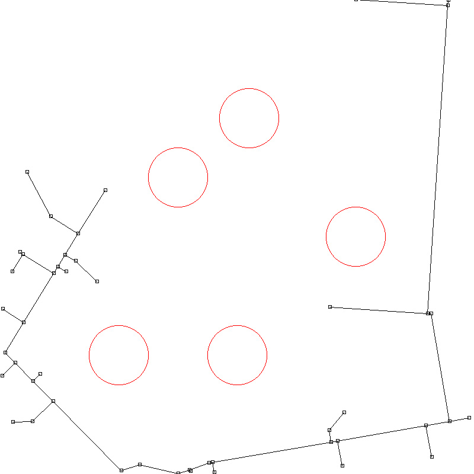
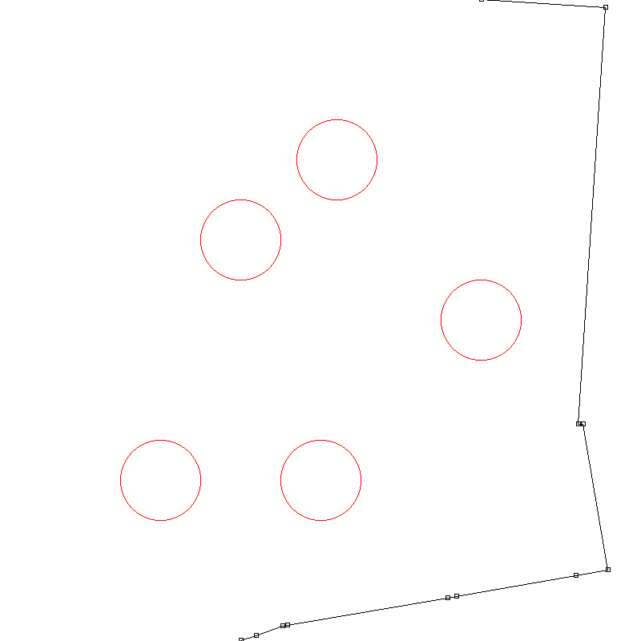
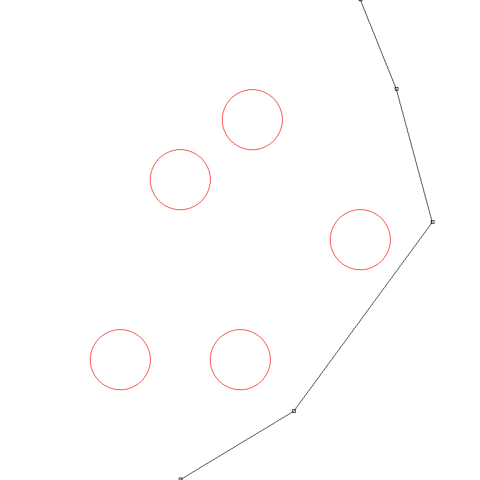
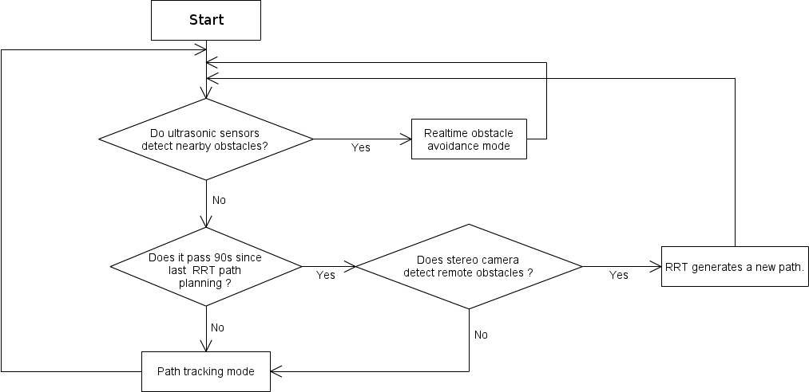
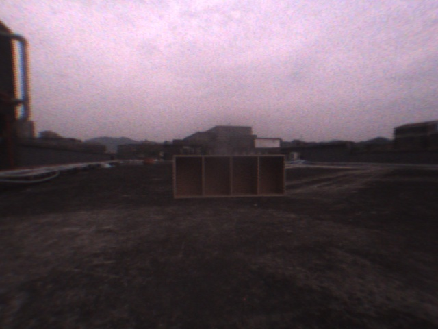
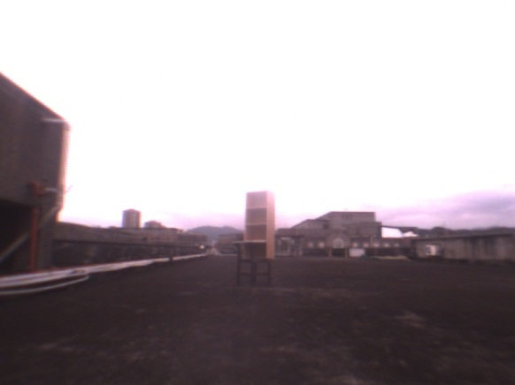
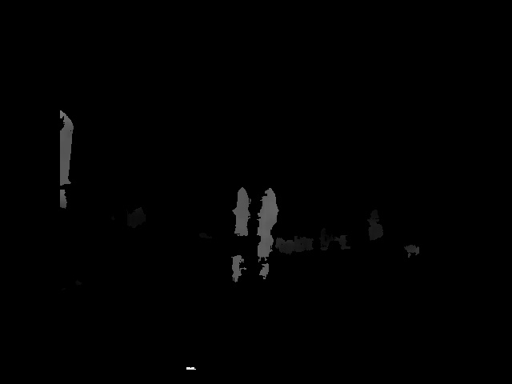
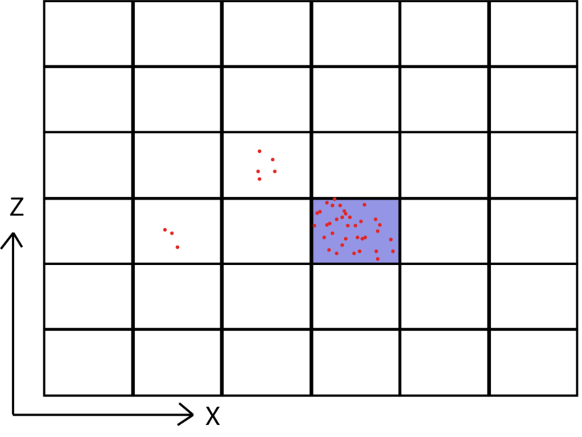

Obstacle Avoidance System Design and Path Planning for An Unmanned Vehicle
Author: Maoyu Chien
Advisor: Prof. Li-Sheng Wang, Prof. Fan-Ren Chang
My Contributions
All programming tasks were done in C++.
Path-planning System
I developed the path-planning system based on Rapidly-Exploring Random Tree (RRT).
The path-planning system takes the coordinates of the obstacles detected by stereo camera,
creating a path to avoid the obstacles.
Here is an example of my RRT implementation:
|  |
 |
| step 0: tree reaches goal |
step 1: intial path |
| |
|
 |
 |
| step 2: shorten path |
step 3: trim unnecessary points |
The source code of RRT and a simple GUI are on Github
In real situation, the path-planning system only discovered the square area around the vehicle, and
the area followed the position of the vehicle. In addition to the path points
generated by RRT, the path-planning system utilized hermite curve interpolation to generate full path. See
Case 1 in the result page for real test.
^TOP
Integration of Path-planning And Ultrasonic Systems
I integrated the path-planning system with the ultrasonic sensor system,
which was employed as a real-time obstacle avoidance method. The characteristics of
these systems are:
RRT-based Path-planning System:
Pro:
- It took the obstacles detected by stereo camera, so the range of detection
was much larger than ultrasonic sensors
- It handled multiple obstacles in systematic way
Con:
- It cost large amounts of computing resources
- The generated path might differ largely from the previous path due to its intrinsic randomness
Ultrasonic Sensor System:
Pro:
- It took the obstacles detected by ultrasonic sensors and utilized fuzzy rules
to avoid obstacle, so it runs faster.
Con:
- It can only avoid obstacles within 1 meter.
- Its scope of obstacle avoidance was localized
I developed a decision flow to integrate these systems so that they complement
each other:

See Case 2 in the Result page for real test.
^TOP
Auto-exposure Method
Since the vehicle walks on the ground, the lower part of stereo camera
should be ground where the exposure value is close to the obstacle.
The specialized auto-exposure method can be expressed as following steps:
- Weighted Average Brightness = (Average greyscale of the lower 1/3 part of the image) * 0.7 +
Averge greyscale of other part * 0.3
- Iterate changing the exposure setting of stereo camera so that this weighted average brightness
falls between 96~160(8-bit greyscale).
|  |
 |
| Built-in auto-exposure method |
Specialized auto-exposure method |
With the specialized auto-exposure method, the images captured by stereo camera
are more clear. Consequently, the result of obstacle detection is improved.
^TOP
Modeling Obstacle Detected By Stereo Camera
Position vectors of all pixels in the left eye image were obtained by the
disparity map calculated by SRI Stereo Engine. SRI Stereo Engine was provided
by the vendor of our stereo camera. The disparity map is illustrated as below:
|
|

|
|
Left Eye Image
|
Disparity Map by SRI Stereo Engine
|
| |
|
All pixels of the disparity map were put to a grid in front of the vehicle according to
their coordinate, like:

The grids I used to modeling the obstacles. Each block is 1mx1m
If the cumulative pixels of a block were higher than a specific threshold and
the average height was higher than ground, that block was considered as an
obstacle, represented by its central point, and sent to main station program
for path planning.
^TOP